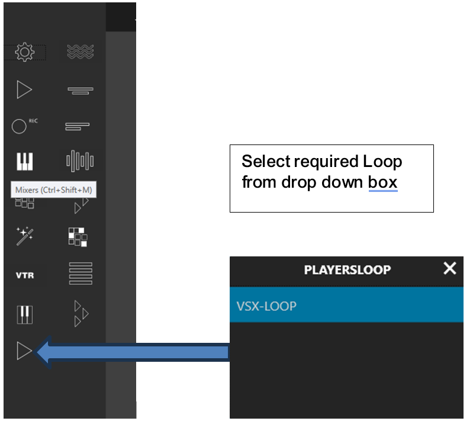
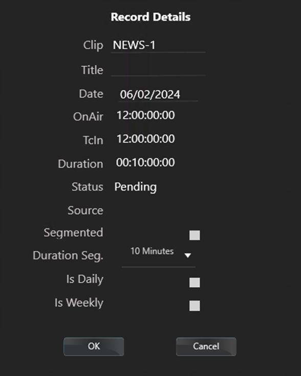

Panels
Click on a panel to open the settings window:
Players Panel
Player panel general overview
The Menu's functions
- Open: open an existing playlist from the playlist stock.
- Save: save the current playlist to the playlist stock.
- Media: load clips from the media stock.
- Subtitle: load subtitles files from the subtitles stock.
- New: create a new playlist.
- Subclip: used to create a single segment from the master clip on the timeline.
- Segment: allows to create multiple segments and merges them all into one file.
- View: Allows to display the clip played. Users can toggle the audio on/off in all the confidence monitor windows
The Control Box's buttons
- Load / Eject: load or eject the current playlist to the player.
- Play / Pause: start or stop the playlist.
- IN: cue the player to In point of the file.
- Fast rewind
- Frame by frame back
- Jog control: speed control.
- Change the speed by dragging the cursor on the speed-line.
- Return to the regular speed by clicking on the button x1.
- Frame by frame forward
- Fast Forward
- OUT: cue the player to Out point of the file.
- Timecode: go to a specific timecode.
- Define a timecode in the TC area
- Click on the button GO TO
Timecode and Timeline
Creating a sub-clip
Two ways are possible to create sub-clip:
- by clicking on the button "Segment" from the player panel
- by using the "Mark In" and "Mark Out" from the player panel and the "Subclip" button.
Using the Segment button:
First of all, select the clip on the playlist you want to segment. Load the clip into the player. Press Segment to open the segment as below:
- Add: to create a new segment.
- Tc In: to set the start point of the segment.
- Tc Out: to set the end point of the segment.
- Flatten: Not available in this release.
- Export: Not available in this release.
Click on the button "Subclip"
- Filename: give a name to the subclip.
- Target TcIn: By default the start timecode is taken from the Mark In point, but users can alter this if they wish.
Click Ok to create the subclip.
By using the Mark In and Mark Out from the Player panel:
From release 1.4.2.30 sub clipping can be managed from the main Player Panel.
Use the "Mark In" and "Mark Out" to select the section of the clip required.
Users can use the "Goto In" and" Goto Out" to check the section.
Click on button "Subclip" and set the associated parameters:
- Filename: give a name to the subclip.
- Target TcIn: Set the start time code of the sub clip required
- Target Directory: Select the directory to save the subclip. The default directory the root directory of the stock option selected in the player settings. Users will then see any sub directory in this root folder
Click Ok to create the subclip.
Checking the transfer of the clip:
From the top bar on the right, look at the "transfer" window to check if the segment has been created.
Subclip shortcut:
When creating a subclip, once the name of the subclip is entered users can use the short cut “Shift+Enter” to accept the defaults and create the subclip.

Media Window
- Delete: deletion of the selected clip
- Rename: renaming of the selected clip
- Lock/unlock: add/remove clip delete protection
- Transfer: transferring the selected clip to the default stock for the currently selected player
Gang playback
Gang playback allows two players to be ganged together such that a primary player transport controls will also control the ganged player. Each player can have clips loaded independently BUT the start timecodes must be identical.
To setup a pair of players users must add the “Allow Gang” option in the players set up, refer to Players - Recorders settingsXXXXXXX.
Open both players onto a desktop, primary player on the left-hand side of the screen.
Each player will have two new icons, top right:
- No Gang: This player currently has no slave player.
- Ungang: Disconnect this player from its slave player.
To gang the two players, select the primary player and select “No Gang”. User is presented with a list of players available – double click the slave player as displayed.
Clips can now be loaded into each player, and controlled from the primary player.
To use the player independently again select “Ungang” on the primary player.
Metadata information
- From the playlist, select a clip
- In the clip name area, click on the "I"
- A popup appears displaying the current user or global metadata set.
The users can add/modify only the user metadata, by selecting one of the metadata and clicking on the button "Set".
Keyboard shortcuts
The player panel supports the use of keyboard shortcuts. The player’s name is highlighted when that particular player has focus.
Player focus can be changed using CTRL+F1……Fn. The order in which the players are placed on the desktop dictates which Fn key is assigned.
List of shortcuts:
- Space = Play/Pause
- k = pause
- j = fast rewind (speed 1/2/4/8/16/32)
- l = fast forward (speed 1/2/4/8/16/32)
- Left = jog-
- Right = jog+
- i = set Markin
- o = set Markout
- Shift i = go to Markin
- Shift o = go to Markout
Export segment list as a playlist
From version 1.6.3.0 users can load a clip, open the segment window and add a list of segments.
Once the list is complete the user can press export and a playlist will be saved to the location <SMS Install location>/QCReports.
Files names starting with “PLT_Segments” can be loaded into a playlist module and played.
Other files are for future use.
Loop Player - Operation
- Select the required player
- From the Player window select the Loop to attached the player. (NB currently this list will also show all stocks configured, so select the required LOOP only.)
- Press “LOAD” to load the selected LOOP recording
Figure 1. LOOP loaded with confidence monitor
Once loaded users can play/jog/shuttle the loop recording. Users can “mark in” and “mark out” point in the clips and select “Extract”
Extract gives the following options.
- Filename - Enter name for the sub clip
- Target TcIn - Not used
- Target Directory - The target directory is currently based on the following rules:
- No Transfer Stock selected in the player setup – Clips will be saved in /fs0/loopRecord/clips/LOOP-4/Extract
- Transfer Stock selected in the player setup – Clips will be saved in the root directory of the transfer stock defined in the player setup.
Recorders Panel
Recorder panel general overview
From version 1.6.3.0 it is possible to increase the duration of any current recording in place. Increments are +15mins, +30mins, 1hour.
Next record: Displays a countdown to the next scheduled recording
Done list: Display a window that shows previous completed recordings.
Record monitoring
Configuration and Status
Date format
By default Spectrum Media Studio uses the date format dd/mm/yyyy.
To use US date format requires editing of <SMS install folder\Config\general.xml>.
- Default date format:
- US date format:
Programming a record
- Choose a clip name (mandatory) and a title (optional)
-
If required, operator can select an input source on the router
Note: The router cross point is made and locked a few seconds before the recorder is cued. - Click Program REC
- From the Programming record list, double click on the new record
- Set the parameters:
- Date: Users can add a date for the recording to take place. When using date recordings, the application and panels must be left open.
- OnAir: set a start time
- TcIn: Not currently used
- Duration: set a duration
- Source: Select a source is router control is installed.
- Segmented: See below.
- Is Daily: This will cause this recording to be repeated every day until deleted from the pending list.
- Is Weekly: This will cause this recording to be repeated on the same day every week until deleted from the pending list.
- Click OK
- The programmed record appears in the timeline
Segmented recordings
When creating a scheduled record, it is possible to have the recording segmented.
This means a single recording will appear on disk as multiple files, each of the length selected in the record settings.
Do to so, check the Segmented box and define the segment size:
- 10 mn, 20 mn, 30 mn or 1 h
Instant record
- Clicking on Instant REC this triggers a manual record.
- If configured Spectrum Media Studio takes a predefined name from the template settings and the default record duration.
- If necessary, click a second time to stop the record.
Importing program record list
A daily list of items to record can be imported.
The imports formats can be .CVS or .XML.
XML example:
Mixers Panel
Mixer panel general overview
Configuration
- 8 slots are available for both On Air and Preview sources. 2 for Players and 6 free for incoming sources.
- In the On Air bar, the highlighted button is the source On Air.
- In the Preview bar, the highlighted button is the source selected.
- Source name: A free space to name source is available below each button.
- Take button: take the selected preview source to put it On Air.
Changing an On Air source
- Click on a source button in the On Air bar.
Preparing a source from the Preview bar
- Select a source on the preview bar.
- Press the button Take to put the preview source On Air.
Keyers Panel
Keyer panel general overview
Source
Up to 8 buttons are available. Each button can have three states: ON / OFF / LOADED.
The button Clear takes all layers OFF AIR.
On the right, the button Templates opens a list of templates on the Spectrum.
To load a template to a keyer, drag and drop it.
Click on the keyer to put it On Air.
Session Lock Status
- Green: No locks
- Yellow: External application has a session lock
- Red: Session lock on this local application
- Yellow with Red X: Permanent lock held by system manager setting
Text updates
Use the keyer bar to update text fields in appropriately configured Spectrum graphics templates.
If a template contains text files, then selecting the T icon will display the fields and the field names.
Macros Panel
Macro panel general overview
VTR Panel
- Current TC : current timecode position on the tape.
- Countdown TC : Countdown of the current recording in progress.
- Tc.In : Start timecode for the current record – can be set manually or via the Mark In button.
- Tc.Out : end timecode for the current record – can be set manually or via the Mark Out button.
- Filename : filename for the current recording.
In this release there is no jog or shuttle control. Users can set an In and an Out, add a filename and select record.
The VTR panel uses one record panel licence
Water Marking Panel
Kantar Water Marking panel general overview
Using the Kantar panel
- Click on the white arrow above the Take button.
- Choose the channel to load on the server.
- Click on the button Take to load it on the server.
Subtitle File Panel
Spectrum Media Studio offers the ability to manage STL files attached to clips in an automation playlist or manually using a player setup.
First, the user needs to specify the service Id in the Player settings to allow the STL management, refer to section Players - Recorders settings XXXXXXX.
Subtitle File panel overview

Configuration
- Click Sync to activate synchronization, then the
panel shows the current status of the STL files attached to the currently
playing clip as attached by an external player/automation.
- De-activating sync allows the user to Eject the currently attached STL file and replace it with a new file by clicking Load:

- To Substract or Add an offset, the user must stop the current subtitle by
clicking On/Off:
- Click the counter to define an offset.
- Click On/Off to start the broadcast of the subtitle service.
- Then click Substract or Add to apply the offset.

Subtitle Live Panel
Subtitle Live panel general overview

Put a Subtitle feed On Air
- Connect a Subtitle provider to the service.
- Verify that the Service indicator is green.
- The text appears in the Subtitle feed as soon as the provider sends text.
- Press the button ON AIR to send the subtitle.
- The button ON AIR becomes red and the Connection indicator green.
Audio Preset Panel
Audio Preset panel general overview

Multi Players Panel
Multi Player panel general overview
Ability to have up to 4 individual players looking at the same Media collection or pre-created playlist.
Each player can have its own playlist of material.
Each playlist can be set to auto follow or manual operation.
The Select Storage drop down menu allows the user to choose subfolders from the main configured media storage.
The Media search field allows quick filtering of the media for selection.
Player's buttons:
- Load/Eject: Load a clip to the playlist or eject it from the playlist.
- Play/Pause: Play the playlist or stop it.
- Next: Go to the next clip on the playlist.
- ReCue: Re-cues the current clip.
- Clear: Remove all clips from the playlist.
- Manual/Auto:
- If Manual selected, clips are played manually.
- If Auto selected, clips are played back-to-back until end of the list.
Routers Panel
The router panel consists of:
- 16 sources : These sources are based on the source groups as defined in the router service configuration. Each group can be selected from the “Sources” drop down menu.
- 8 destinations : The destination group is selected from
the "Destination" drop down menu. These include,
- Router: The 8 destinations configured in the Routers option in the setup menu.
- Mixer: The destinations based on the mixers configured for each Spectrum Input.
Playlist Panel
The Playlist module allows the user to create, save and import simple playlists.
Playlists can support either “Auto” or “Manual” mode allowing the user to have either back to back clip playback or fully manual control of when clips are played.
Both modes are supported in the same playlist.
- Open: opens a browser to load an existing playlist.
- Edit: allows the user choose a Start mode (Auto or Manual) for the selected clip in the playlist.
- Save: opens a browser to save the new playlist.
- Del: removes the selected clip from the playlist.
- Clear: removes all clips from the playlist.
- Start: activates the playlist = ready to be played.
- Play: runs the playlist and stops the playlist.
- Next: goes to the next clip.
- Skip : Skip to the highlighted clip later in the list
- Off: enable/disable the loop mode (for details, refer to Loop mode paragraph below)
Click Stock on the left, to extend the stock panel and display the clips available in the current folder or subfolder:
- The user can drag and drop clips into the playlist or by double clicking on a clip to add it to the bottom of the playlist.
- If using drag and drop the clip is inserted under the selected item (blue highlighted).
Double clicking on a clip opens a new panel, allowing the user to edit the parameters of the playlist item.
Start Mode Options
- Clock: set a fixed start time = OnAir time to start playing the clip once the playlist is activated
- Auto: clip will automatically after the previous clip.
- Manual: Previous clip is played to the set outpoint. If the user has configured a "freeze" time in the general settings, and the next clip is also set to manual, the clip will hold the last frame for the configured time before cueing the first frame of the next clip.
-
It is possible to change the TcIn, TcOut and Duration of a clip in the playlist
CAUTION: It is possible to set values that are outside of the clip parameters, which can cause on-air problems.
The Playlist module allows playlist and users to specify timecode In , Out and durations within clips. Thereby the user can “soft part” longer programs without the need to subclip each part.
- Over-Ride Clip TCIn
- set to Clip_TCIn (default) - this will use any start point set in the actual video clip.
- set to TimeCode – this will cause the playlist to read the TcIn value set by the user on the right of the dialogue box.
- End Mode
-
- Set to Clip_TCOut (default) - this will use any end point set in the actual video clip.
- Set to TimeCode – this will cause the playlist to read the TcOut value set by the user on the right of the dialogue box.
- Set to Duration – this will cause the playlist to read the Duration value set by the user on the right of the dialogue box.
Note: When using drop frame and manually entering timecodes for TcIn and TcOut the UI will convert NON valid times such as 00:01:00:00 to 01:00:00:02. -
The Over-Ride Clip TCIn and End Mode are present in the playlist XML schema with the following tags:
- SOM="Clip_TCIn" - (default) – uses the start time from the video clip
- SOM="Timecode" - when set to timecode the value in the TcIn tag will be used
- EndMode="Clip_TcOut" - (default) – uses the end time from the video clip
- EndMode="Timecode" - when set to timecode the value in the TcIn tag will be used
- EndMode="Duration" - when set to Duration the value in the Duration tag will be used
Right clicking on a clip presents the user with the following options:
- Recue Clip: If the currently selected clip is playing, this will recue that clip
- Copy: Copy selected clip
- Paste: Paste copied clip at end of playlist
- Move Up: Move currently selected clip up the playlist
- Move Down: Move the currently selected clip down the playlist
- Set Manual: Set the start mode of the currently selected clip to manual
- Set Auto: Set the start mode of the currently selected clip to Auto follow
- Insert Ext1: See later section for configuration and use
- Insert Ext2: See later section for configuration and use
- Insert Place Holder: Selecting this will open a separate window allowing users to enter a clip name into the playlist that does not exist yet
- Set Loop: Allows users to select a group of 3 or more clips to loop in the playlist
Currently it is not possible to make any changes to the playlist while it is activated, except for:
Change clip from Auto to Manual, recue clip or Move Down/Move Up.
Adding live events into the playlist
The current implementation is for standard channel only and requires that:
- Dummy clips must be created for a codec that the player supports and added to
the players default folder with the following names:
-
External1.mxf – 25fps or 29.97fps – used for SC1 with 1 live input
-
External2.mxf – 25fps or 29.97fps – used for SC2 with 2 live inputs
-
- A mixer must be created for the associated channel. To do so, refer to Settings/Mixers XXXXXXXXXXXXX.
- This mixer must be added as the "Associated Mixer" to the player being in used. To do so, refer to Settings/Player XXXXXXX.
- The mixer must be opened on the same desktop as the playlist.
- Click right on the playlist panel to insert the new live events.
- These clips can be moved up and down the playlist as any other event.

In version 1.5.1.7, the workflow is:
- Do not add the event via the stock's menu
- The default live event duration is 10 minutes
- If all events are set to auto then after 10 mins of the live event, the next clips will play *
- If the event following the live event is set to manual, then the live event will play indefinitely *
* To come out of the live event in the two cases above, the user must press take next
Adding Placeholders

Select a line within the playlist and right click and select “Insert Place Holder”

Type in the name you need for the place holder.
An empty entry is added to the playlist. Once the clip is added to the file system it will become playable.
Missing clip auto fetch
Missing clips can be automatically transferred to the local file system.
- In player settings, add a transfer location. This is previously configured stock location in FIT service. Refer to Installing FIT Service XXXXXXX.
- When a playlist is loaded, any missing material will be fetched if it exists in this location. Currently there is a limitation when loading playlist with missing events. If the playlist is loaded then activated very quickly, and there is a missing event in the first three item, then the missing clip will be skipped. Users must load the playlist; wait for notification that the missing clip is transferring then the playlist can be activated.
Skip
From version 1.6.2.12 the playlist panel contains a “Skip” function.
Users can select an event in the playlist, pressing “Skip” will cause the playlist to jump to and play from the selected event.
Start Here
From version 1.6.3.0 the playlist panel contains a “Start Here” function.
This allows users to have the playlists start from the selected event.
Events prior to this will be deleted from the displayed playlist.
Set Loop
From version 1.6.3.0 the playlist panel contains a “Set Loop” function. Users can define a group of clips that will loop continuously.

To exit the loop users can:
- Select an item later in the list and press skip
-
Set a clock event following the loop. The loop will exit at the clock event time – wherever in the clip the loop is currently playing, it will not wait till the end of a clip.
Important: The minimum loop length is 3 clips.
Ext. Stocks
Click Stock on the left, to extend the stock panel. The initial display shows the configured default stock folder.

The stock window offers the following options:
- Change: User can select any subfolders under the main folder
- Refresh: Refresh the clip list
- Ext Stocks: This option will open a separate window:

This window is the same as the media window form the simple player and allows the user to select different filesystems and transfer media to the local drive, while the playlist panel is open.
Shot box mode
From release 1.4.x.x. it is possible to use the playlist module in shot box mode.
This mode is enabled in the General Settings - Double Click Playlist Mode and setting Insert Playlist Manual.
When in this mode users can add clips to the playlist, then double clicking on any clip in the playlist will cause that clip to be immediately cued for playback. This will eject any other clip currently playing.
Loop mode:
It is possible to loop a playlist in the playlist window.
When Loop is OFF the playlist will play as normal.
Activating the Loop mode will cause the each played item to appear at the bottom of the playlist. Loop mode can be activated and de-activated at any time while the play list is running.
Multi-Recorders Panel